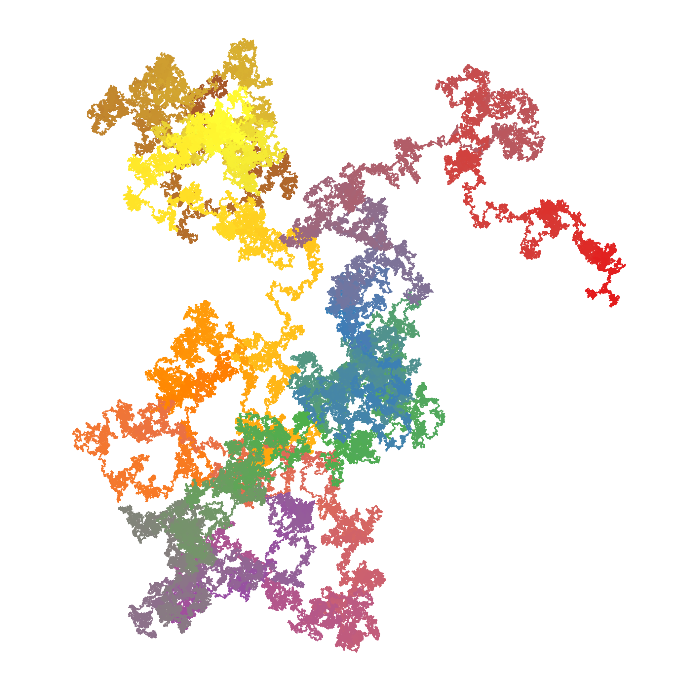

Christian Knudsen
Dansk
English
Home
CV
Work
Education
Organisations
Other
Publications
External Stuff
Notes and stuff
Kategorier
AI
Arbejde
CLI
Excel
Generativ Kunst
Generativ kunst
Generative aRt
ggplot
Linux
Myter
PCA
PDF
pdf
Pride
Projekter
Python
R
VBA
Visualisering
Noter
Mange af disse noter har deres oprindelse på ældre blogs, enkelte helt tilbage fra 2003
Sorter ved
Standard
Overskrift
Dato - Ældste
Dato - Nyeste
CiRcle aRt 0.5
Inspireret af Karel Novosad
26 okt. 2025
Redigering af PDF’er
Semi-automatisk
22 juni 2025
Adfærdskodeks
Eller: Code of Conduct for voksne
10 juni 2025
Stakket barchart
Og lidt af udfordringerne med den type plots
16 maj 2025
Ting jeg har lagt mærke til
Noter til oplæg om AI
2 maj 2025
Stakkede barcharts
Af kønsopdelt tidsforbrug i Danmark
15 nov. 2024
Parade ruter
Den der oplevelse når aviserne skriver om noget du faktisk ved noget om.
19 aug. 2024
Blue Vorontex #47
Polær Voronoi Tesselering
9 juni 2024

Pi-walk
Walking the pie
27 apr. 2024
Kosmisk Floræ
Generativ Kunst
14 apr. 2024
Påske in Excel
17 juni 2022
Sådan får du en Raspberry Pi model 3 til at boote Home Assistant fra SSD disk
Og nok også fra andre modeller
15 apr. 2022
ggbiplot
Fordi github kan være træls
3 sept. 2020
Get current wifi ssid in python
indsæt subtitle
6 apr. 2020
Get the font color of a cell in Excel
indsæt subtitle
10 sept. 2018
Saml PDF-files
Fra kommandolinien
22 mar. 2018
Dansk-Engelsk excel ordbog
14 mar. 2018
Skjul rækker - baseret på værdi af celle
I Excel
12 mar. 2018
Ingen resultater